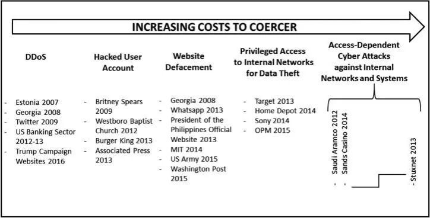
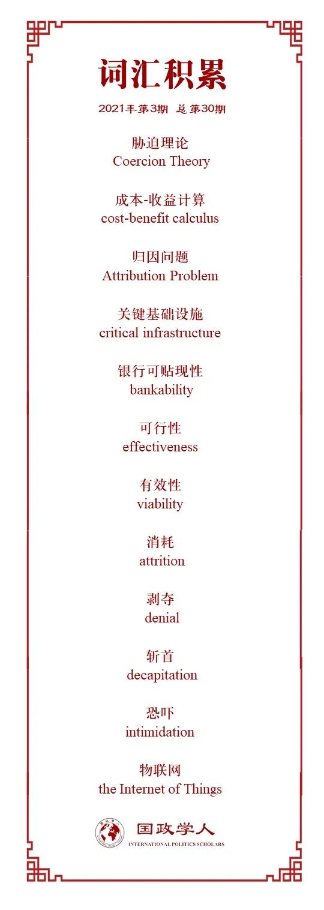

收录于合集

作品简介
【作者】 Erica D. Borghard，前美国西点军校社会科学系助理教授及大战略项目执行主任，现任哥伦比亚大学萨尔茨曼战争与和平研究所研究员。Shawn W. Lonergan，美国西点军校陆军网络研究所助理教授及研究科学家，现任美国网络空间日光浴委员会高级顾问。
【编译】 何伊楠（国政学人编译员，中国政法大学国际政治专业硕士）
【校对】 王川
【审核】 赵雷
【排版】 毛雅欣
【美编 】马颖
【来源】 Erica D. Borghard, Shawn W. Longergan, 2017, ‘The Logic of Coercion in Cyberspace’, Security Studies , vol.26, no.3, pp. 452-481. doi: 10.1080/09636412.2017.1306396.
【归档】 《国际关系前沿》2021年第3期，总第30期。
期刊简介
《安全研究》收录出版创新性的学术稿件——无论是理论研究、实践经验分享还是两者兼而有之。安全研究包含广泛的议题，从核扩散、核威慑、军民关系、战略文化、种族冲突、流行病与国家安全、民主政治、外交决策到定性与多方法研究的发展。根据2019年的Journal Citation Reports显示，其2019年的影响因子为2.167，在95种国际关系类期刊中排名第21。
网络空间的胁迫逻辑
The Logic of Coercion in Cyberspace
Erica D. Borghard
Shawn W. Lonergan
文章导读
网络空间已明确成为国家间进行军事互动的前沿领域：在无政府体系下各国政府投入大量资源在网络空间发展进攻性和防御性军事能力已成为常态。胁迫在网络空间中如何表现？国家能否利用网络手段作为独立的胁迫工具来影响对手的行为？作者首先回顾了胁迫理论的核心原则及行为体对敌实施胁迫成功的四个必要条件，通过对比四种条件运用于传统战争领域与网络领域的不同，探索国家在网络空间中如何胁迫对手。其次，作者评估了在传统胁迫理论文献中突出的六种战略应用于网络空间领域的可行性和有效性。最后，作者认为，只有其中三种胁迫手段在网络空间中有效且可行。但随着时代发展，其他手段的有效性和可行性也会有所改变。
01
胁迫理论（Coercion Theory）
胁迫是通过威胁（threat）或有限地使用军事力量来影响对手的行为。 正如托马斯·谢林（Thomas C. Schelling）所言，“胁迫是用破坏或即将到来的破坏进行威胁，使对方屈服或服从”。胁迫促使对手进行行为或结果预期，迫使对手进行成本-收益计算（cost- benefit calculus），使对手认为让步于胁迫者偏好的行动路线比违抗胁迫者的要求成本要低。胁迫不同于在军事上击败敌对国的暴力（brute force），实施胁迫的国家会保留对手抵抗或服从的军事能力。当前核武器的出现和相互确保摧毁使得胁迫手段更加重要，而网络空间中的网络武器像核武器一样，能够在不首先击败对手的军队的情况下瞄准对手的人口中心，使对手陷入危险。例如，2007年叙利亚防空系统未能防御以色列对其核浓缩设施（nuclear enrichment facility）的轰炸。
事实上，作为国家战略的核心之一的胁迫手段很难成功。这是因为 胁迫成功必须满足四个基本条件 ：（1）胁迫国对目标国的胁迫必须得到明确传达；（2）胁迫国必须操纵被胁迫国的成本- 收益计算，使被胁迫国认为对其让步的成本小于反抗胁迫国的成本；（3）胁迫必须是可信的（credible）；（4）胁迫国要确保对被胁迫国的保证（reassurance）。
02
**
**
胁迫成功的四个基本条件及其在网络空间的运用
1、胁迫信号的明确传达（Communication）
被胁迫国只有明确胁迫国希望其参与（或不参与）的行为、胁迫国期望其遵守的时间段以及合作与背叛的相关成本，胁迫才成功。理想情况下的胁迫往往采用最后通牒的形式：即如果B国在时间段Y内不采取行动X，A国将采取具体行动Z。 由于三个原因胁迫信息难以明确传达 ：（1）被胁迫国领导人为保持战略灵活性、获得国内支持而逃避承诺；（2）无政府状态导致国家间沟通复杂化，信息零碎甚至有时被歪曲；（3）文化差异和认知限制导致接受信息的被胁迫国不清楚胁迫国传达的胁迫信息。
在网络空间中， 对发送信息的国家来说发送信息有三方面困难 ：（1）不同于外交语言，网络空间大多数操作依靠人机交互和代码交流，没有一种网络空间公认的语言引导决策者达成一致；（2）许多国家的高级决策者缺乏网络基本知识，难以识别网络信号；（3）发送信息的国家不确定选择何种网络工具进行通信，甚至对网络攻击的实际效果也难以预测。 对接收信息的国家来说 ，有时它们很难接收到发起国的网络攻击信号，有时即使接受到信号也难以区分发送信号国家的意图是善意还是恶意，即网络空间的 归因问题 （Attribution Problem） 。
作者提出三种 接收网络信号的国家（即目标国）可采取的归因方法及存在的问题 ：（1）最简单的是发动网络攻击的国家公开承认其行为责任且目标国相信攻击者具有实施行为的能力和动机；（2）目标国能够访问发动攻击国入侵的网络并追溯或记录其入侵网络的操作，但这要求目标国具备这种技术能力；（3）目标国将传感器放置在互联网运营商或互联网运行算法的关键节点中分析原始数据流并扫描攻击信号的异常和变体，但这种技术尚处于初级阶段，并不一定能追溯到真正发起网络攻击的国家。此外，即使目标国可以将网络攻击归因于特定国家，但目标国可能不愿暴露本国技术实力，因为这可能要公开一些珍贵的信息。例如，美国在2014年底将索尼黑客攻击迅速归咎于朝鲜可能暴露了美国对别国政府网络基础设施的访问。
对试图胁迫对手的国家来说，不同于网络间谍行动， 被胁迫国需要将信号发送者归因于胁迫国，并将胁迫国发送的信号成功归因于旨在破坏、否认、降低和/或破坏计算机和计算机网络或系统本身上的数据 。胁迫国可以采取两种手段确保成功：（1）将网络攻击行为与外交信息相结合，阐明胁迫意图。如2016年3月，时任美国国防部长阿什顿·卡特（Ashton Carter）在一份正式公开声明中承认，美国对伊拉克伊斯兰国和叙利亚在伊拉克摩苏尔的指挥和控制系统进行了网络攻击。（2）在被胁迫国机器上保留一些网络操作的痕迹，如在代码中嵌入唯一符号。
2、影响目标国的成本-收益计算（Cost-benefit Calculus）
胁迫理论假定国家是理性行为体，在决定如何应对国际体系中其他行为体构成的威胁和诱因时会进行成本- 收益计算。胁迫国迫使被胁迫国在“做出让步或承受后果”之间做出选择，为了胁迫有效，胁迫国必须使被胁迫国认为向胁迫国让步的成本小于反抗胁迫国的成本。因此， 胁迫的核心是操纵被胁迫国对某一特定行动方针的成本收益平衡的看法 。由于被胁迫国不了解胁迫国的价值观、被胁迫国领导人本身并非总是理性行为体、目标价值有时涉及威望等难以量化成本的因素而难以计算、被胁迫国行并非单一行为体（国内政治或官僚组织的影响）等原因，被胁迫国产生的认知限制会使胁迫失败。
在网络空间领域，作者提出 三个胁迫国用以胁迫敌对国家的攻击目标 （其中胁迫国攻击目标越昂贵，攻击使用的成本就越高，但也越容易操作被胁迫国对成本- 收益计算的看法，从而使胁迫成功）：（1）目标国的关键基础设施（a state’s critical infrastructure）。为确保这些设施难以入侵，其周围往往具备先进的物理和虚拟防御措施。对这些设施的关键节点进行破坏可能对目标国的安全、经济、公共卫生或安全、环境等产生破坏，但是也要注意并非所有国家的关键基础设施都受到重视；（2）军用设施（military capabilities），包括运行在航空电子平台上的软件、与防空系统和全球定位系统（GPS）相连的资产、通信系统和卫星等；（3）公司部门（corporate sector），包括特定银行的银行可贴现性（bankability），主要国防承包商的网络，或零售商持有的消费者信息。虽然攻击公司部门的网络对被胁迫国带来的成本考虑远低于对前两者的成本考虑，但被胁迫国有时会考虑到胁迫国对私营部门的攻击带来的名誉损失破坏了被胁迫国政权合法性，或被攻击的公司部门是维持国家政权的关键行业，这也使得被胁迫国接受胁迫。
但是，作者也指出：各国可能无法完美地调整网络信号以影响目标国的成本- 收益计算。这是因为能力较差的国家会发送成本较低的信号，即使其不足以改变目标国的计算。还有一些国家政府会主动选择吸引人的廉价、快速和容易的网络操作，即使它们的胁迫效果较差。
3、提高胁迫的可信度（Credibility）
除了使用昂贵的成本操纵被胁迫国对成本- 收益计算的看法，胁迫国还需要使被胁迫国相信胁迫国确实会执行相应的胁迫手段。胁迫国提升可信度有两种方法：（1）限制被胁迫国的选择并提高被胁迫国不符合胁迫条款时退缩的成本；（2）采取代价高昂的行动，如动员军队。
同样，在网络空间中有两种机制有助于提升胁迫国可信度：
（1）建立网络力量指数（Cyber Power Indices）
网络力量指数包括预算、增加和训练网络部队、建立司令部，以及宣传参与重大网络演习。这有助于明确评估一国的网络实力，从而展现胁迫国的网络力量。但是，这一举措也面临国家在网络领域信息的私密性、网络力量规模估测难度大、对技术人员操作要求高等限制。
（2）作为成本高昂的胁迫信号的网络行动（Cyber Operations as Costly Signals）
胁迫国发送信号的成本越高，越能显示其进行胁迫的决心。作者提出了网络胁迫行为的频谱（Spectrum of coercive cyber operations, 如下图）：
第一种成本最低的方法是进行DDoS攻击（中央计算机指示由多个受损计算机相连接形成的僵尸网络入侵另一台计算机使其关闭，攻击速度取决于所使用僵尸网络的大小）；
第二种方法是黑客入侵账户（Hacked User Account）进行攻击，如2013年黑客入侵美联社推特账户称白宫两起爆炸导致总统受伤，导致股市波动；
第三种方法是网站涂改（Website Defacement），如2015年美国陆军官方网站被篡改和2015年叙利亚电子军队对华盛顿邮报网站的黑客攻击。
第四种方法是为了数据窃取而获得对内部网络的特权访问（Privileged Access to Internal Networks for Data Theft）;
第五种方法成本最高，是访问防御良好或封闭的网络并试图破坏或破坏关键系统进行网络攻击（Access-Dependent Cyber Attacks against Internal Networks and Systems）。

**
**
4、向被胁迫国保证（Reassurance）
在使被胁迫国相信胁迫国有能力实施胁迫的同时，胁迫国也要向其保证不会在被胁迫国遵守胁迫条款的情况下继续对其实施威胁。保证同样是困难的，被胁迫者越信任胁迫者实际实施威胁的能力，就越不可能相信胁迫国不会在此基础上施加更多的威胁。同样，出于国内政治原因，胁迫国领导人可能担心在危机情况下向被胁迫国发出保证的信号会使其在国内公众面前显得软弱无力，犹豫不决。
在网络空间中，有效地指挥和控制网络攻击是保证的关键，但这很难确保：一方面，一些胁迫国可能会选择网络代理进行网络攻击，而有的网络代理可能并不服从胁迫国的指挥；另一方面，有时网络攻击工具一旦释放就不可控制，例如Stuxnet计算机病毒可能从未打算传播到伊朗的核离心机之外，但它感染了世界上超过10万台计算机后才被控制。
经过论述，作者认为：一次既能对被胁迫国进行有效保证，又能最大限度地提高被胁迫国成本计算的网络胁迫可能无法实现 。
03
评估几种经典胁迫战略在网络空间的运用
经过上一部分讨论，作者认为动用网络力量不是一种理想的可独立运用的胁迫工具。在这一部分，作者给出有效性（effectiveness）和可行性（viability）两个维度的2×2矩阵，评估在探讨胁迫理论的文献中最突出的六种战略在网络空间的可行性和有效性（如下图）。其中可行性主要基于该战略在已知的现有能力上是否可行，有效性主要基于该战略是否能足够改变国家行为。

基于理论上的评估（在实践中还取决于被胁迫国对特定情况的特定成本-收益计算），本文将六种战略分为三类：
1、可行且有效的战略
（1）消耗（Attrition）
网络空间领域的消耗战略包括削减和摧毁被胁迫国政府或私人网络系统的攻击手段，这将建立被胁迫国用户对国家网络或系统的不信任，从而迫使被胁迫国放弃运作。网络突袭是消耗战略的常用手段——摧毁或腐蚀处理军事计划的空中或船舶任务命令，甚至国防发展的服务器，可以防止某些行动在迫切需要时发生，最终将削弱一个国家对其网络和数据的信心。
（2）剥夺（Denial）
传统的剥夺战略既包含防御部分（增加自己的防御，使对手不能在不提高成本的情况下继续进攻）也包含进攻部分（积极地利用自身军事能力来剥夺对手实现目标的能力）。与传统的剥夺不同，在网络空间由于许多现代战场系统越来越依赖嵌入技术，这些系统可以攻击的面积显著增加。从理论上讲，未来使用网络攻击可以使整个武器系统在关键时刻失去攻击能力。另一方面，对时间的考虑可能会影响对网络空间剥夺战略潜在成本的评估。例如，网络工具可以用来禁用而不是摧毁敌方的武器系统或指挥和控制，使攻击在短期内代价高昂，但比表面上通过常规手段永久销毁这些系统的代价要低。
（3）斩首（Decapitation）
斩首策略试图通过针对指挥和控制中心、领导、关键经济节点和关键武器系统来实现战略瘫痪。目前，在技术上可以使用网络攻击来关闭命令和控制节点。鉴于大多数国家使用二级和三级冗余系统以及单独的通信网络，这类操作的影响可能是短暂的，这将需要多个不同的网络操作来实现近乎完全的指挥和控制瘫痪。此外，即使网络攻击可以成功地针对政府的主要通信网络，备份系统也可能需要传统形式的电子战或传统操作（例如干扰传输、捕获游标或切断电话线或海底电缆来击败）。但是这一分析也意味着，人们更有可能发现在较低指挥级别使用的斩首战略，例如在实地的部队，那里通常有较少的冗余系统，或针对能力较弱的国家。
2、可行但无效的战略——恐吓（Intimidation）
在网络空间，恐吓通常采取网站涂改和电子垃圾邮件的形式。虽然具备可行性，但它们涉及的资源较少，技术含量较低，这些类型的攻击是相当普遍和容易恢复的，不太可能有足够的成本迫使目标国改变行为。例如，2008年格鲁吉亚政府网站中总统米哈伊尔·萨卡什维利（Mikheil Saakashvili）的照片被替换为阿道夫·希特勒（Adolf Hitler），并没有产生实质性胁迫效果。
3、不可行且无用的战略
（1）惩罚（Punishment）
从理论上讲，在网络空间实施惩罚将涉及使用网络力量对民用基础设施和人口中心造成虚拟和实际损害。这可能导致对水处理设施、运输、空中交通管制系统、核电厂、电网、食品安全系统、废物管理系统等基本服务的攻击。然而，在实践中，鉴于网络领域的当前性质，惩罚有两个关键要素是无法持续的：第一，攻击的即时和突然性；第二，造成目标国受损的规模和范围。简单地说，政府不能在很短的时间内使用网络武器杀死很多人，仅通过网络领域就能造成的巨大损害难以与对城市的常规或核攻击造成的破坏相提并论。访问要求和网络能力的定制性质使得国家几乎不可能发起一个长时间高度协调的网络运动。
（2）风险操纵（Manipulation of Risk）
风险操纵战略要求对平民目标的攻击强度和范围逐步升级。操纵风险有一个关键的心理因素，因为驱动目标国让步的是未来受损的威胁和前景，但这在网络空间很难实施。在网络空间中有效使用风险战略将需要胁迫政府对其将针对对手使用的网络工具进行不可能的高度控制。
但是， 作者也认为惩罚和风险操纵战略的效用有可能改变 ，这取决于当前的技术状况和现代社会对基于网络的基本服务的依赖。而这两个方面的变化——技术可行性和/或可能对平民造成的成本——将改变惩罚和风险操纵战略的可行性和有效性（但也是它们的脆弱性）。例如，物联网（the Internet of Things）的诞生可以使政府通过网络手段对社会造成高昂和破坏性的成本。
04
总结
作者通过确定胁迫成功的四个关键条件——信号传递、成本- 收益计算、可信度和保证，探讨了胁迫理论的逻辑和在网络空间的运用。随后，分析了六种胁迫战略在网络空间的效用，指出可行且有用的三种战略——消耗、剥夺和斩首。但是，随着技术的发展和物联网使社会更加相连也更加脆弱，理论上没有效用的惩罚和风险操纵战略也可能发挥效用。作者认为：在国内一级，各国政府应努力提高民用网络的弹性（resiliency）；在国际一级，迫切需要管理网络领域适当目标的规范。
译者评述
胁迫理论主要用于在传统安全领域的探讨，本文则将其运用在近年来愈发受到学界关注的网络安全这一非传统安全领域。在充分回顾了传统胁迫理论的内涵及有效性的基础上，作者结合实证评估了传统的胁迫战略在网络空间领域的可行性和有效性。最后，作者从理论意义上否定了惩罚战略和风险操纵战略在网络空间中的效用。考虑到本世纪科技和物联网的发展，作者在实践意义上承认了这两种战略具备的前景，可见本文兼具理论和实践意义。
此外，文章使译者想到传统安全理论的两个重要概念——强制（compellence）与威慑（deterrence）。前者是威胁或有限地使用武力来改变对手的行为，而后者是威胁使用武力（或痛苦）来维持现状。胁迫手段同时包含了两个层面的意义，但又不追求在军事上全面摧毁敌对国家，由胁迫理论的提出也能看到国际安全理论的演化。
最后，本文还具备一定的理论探讨空间：一方面，文章主要探讨了国家层面为维护网络安全而进行的相互行动，完全基于国家作为独立的理性行为体这一假设和国家中心论。对国际社会其他行为体在网络空间的活动中对网络安全造成的影响，及这些行为体在对国家运用胁迫手段时的作用等，存在探讨空间。另一方面，作者在文中提出，网络空间的胁迫手段并非理想化的单独的胁迫工具，在与其他领域的胁迫手段结合时，才更能发挥其效用，对于网络空间的胁迫与传统安全领域（政治、军事等等）和非传统安全领域（海洋安全、能源安全、粮食安全等等）胁迫手段组合使用的有效性探讨，也是值得探讨的议题。
词汇整理

文章观点不代表本平台观点，本平台评译分享的文章均出于专业学习之用, 不以任何盈利为目的，内容主要呈现对原文的介绍，原文内容请通过各高校购买的数据库自行下载。
好好学习，天天“在看”
国政学人
支持学术公益与知识传播
微信扫一扫赞赏作者 __赞赏
已喜欢，对作者说句悄悄话
取消 __
发送给作者
发送
最多40字，当前共字
上一页 1/3 下一页
长按二维码向我转账
支持学术公益与知识传播
受苹果公司新规定影响，微信 iOS 版的赞赏功能被关闭，可通过二维码转账支持公众号。